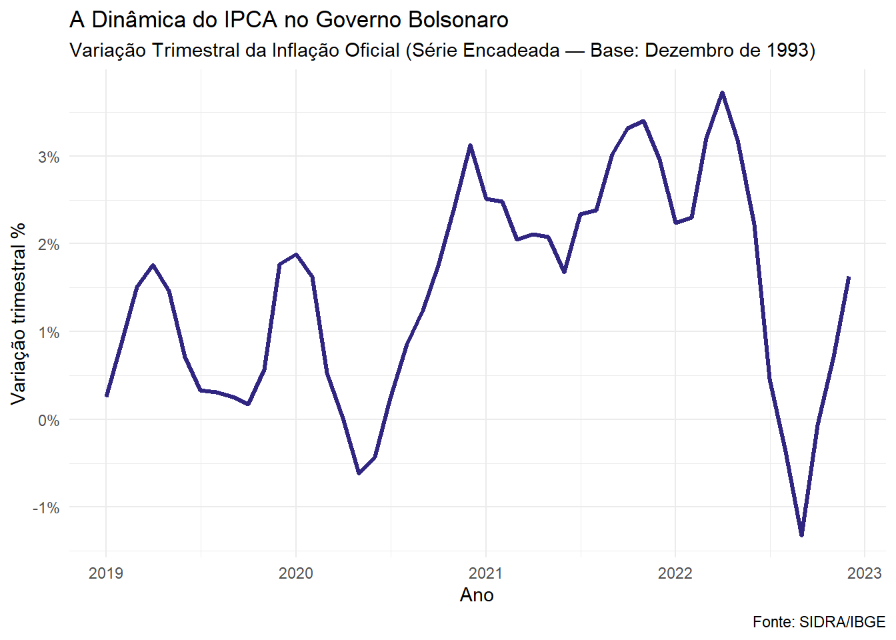
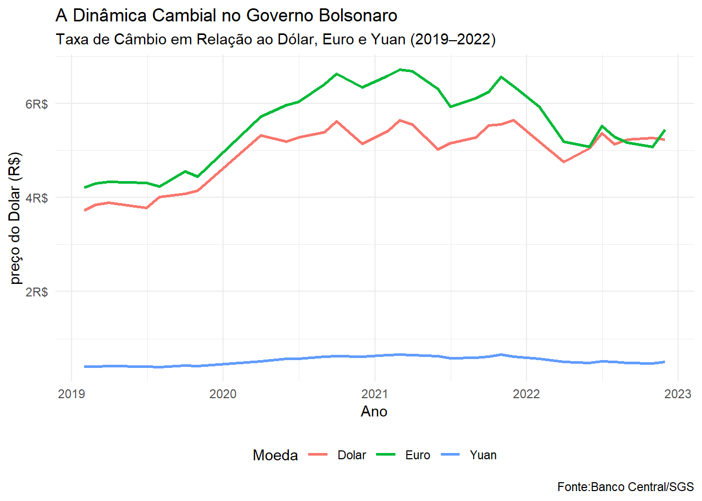
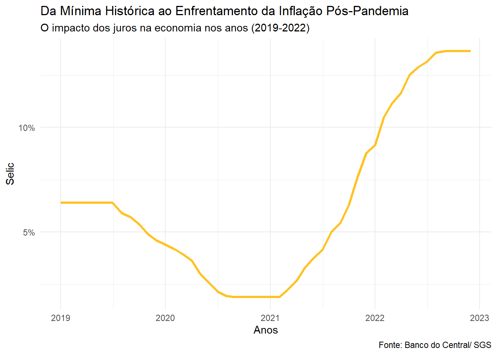

O Governo Bolsonaro: Agenda Liberal e os Impactos da Pandemia
Introdução
“Apesar da crise mundial, o Brasil chegou ao final de 22 com a economia em plena recuperação. Temos emprego em alta e inflação em baixa”
— Jair M. Bolsonaro
O governo de Jair Bolsonaro iniciou-se em janeiro de 2019 sob uma forte guinada ideológica e econômica à direita. No campo econômico, a gestão caracterizou-se pela nomeação do economista Paulo Guedes para o Ministério da Economia, estabelecendo uma agenda de forte orientação ultraliberal. O cerne dessa política baseava-se em reformas estruturais de austeridade, privatizações, desregulamentação trabalhista e flexibilização das exigências para abertura de empresas, buscando atrair o capital privado e agradar investidores e agentes do mercado financeiro. Entre os principais marcos desse período, destaca-se a aprovação da Reforma da Previdência em 2019.
No entanto, o desempenho macroeconômico do país enfrentou profundas rupturas a partir de 2020 devido à eclosão da pandemia de Covid-19. O gerenciamento governamental da crise sanitária gerou intensas controvérsias políticas, afetando a dinâmica produtiva e o mercado de trabalho. Para mitigar os impactos da paralisia econômica sobre a renda dos trabalhadores de menor poder aquisitivo, foi instituído pelo Congresso o Auxílio Emergencial (inicialmente de 200 reais e posteriormente ampliado para 600 reais), medida que sustentou minimamente o consumo e impediu uma queda ainda mais severa do PIB. Mesmo assim, o período foi marcado por forte instabilidade e pelo crescimento do desemprego, que atingiu picos expressivos antes de iniciar uma trajetória de recuperação.
No front financeiro e monetário, a condução da política econômica sob a liderança do Banco Central (que passaria a contar com autonomia formal durante o mandato) lidou com cenários extremos. No auge da recessão pandêmica em 2020, os juros básicos foram reduzidos a patamares historicamente baixos, buscando reaquecer os canais de crédito. Contudo, os desequilíbrios fiscais decorrentes dos gastos emergenciais extraordinários, somados aos choques nas cadeias globais de suprimentos e à alta das commodities, desencadearam um processo inflacionário severo. Diante de um IPCA que chegou a atingir os dois dígitos, a autoridade monetária respondeu com um ciclo agressivo de elevação dos juros no encerramento do mandato, restabelecendo patamares altamente restritivos para a atividade econômica.
Para compreender os desdobramentos práticos e os resultados econômicos dessa complexa conjuntura, este bloco analisa a evolução integrada de três variáveis fundamentais:
A Inflação (IPCA): A volatilidade dos preços sob os choques de oferta globais e os efeitos da desvalorização da moeda nacional na inflação doméstica.
A Dinâmica Cambial e o Mercado Global: As oscilações do Real em um ambiente de forte aversão ao risco internacional, tensões institucionais e flutuações nas exportações agrícolas brasileiras.
A Taxa Selic: O movimento histórico de queda ao piso mínimo de 2% ao ano e o posterior reajuste severo para conter o avanço dos índices inflacionários na economia.
A Inflação (IPCA)
O governo Jair Bolsonaro começou em 2019 com um cenário aparentemente controlado. A inflação herdada do governo Temer estava dentro da meta, a Selic em 6,5% e a economia dava sinais tímidos de recuperação. À frente do Ministério da Economia estava o economista ultraliberal Paulo Guedes, com um programa ambicioso de privatizações, reformas estruturais e ajuste fiscal. O primeiro ano, porém, foi de desapontamento: o PIB cresceu apenas 1,2% e o desemprego permanecia em 11,9% — sinais de que a economia seguia sem tração.
Tudo mudou em 2020. A pandemia de COVID-19 paralisou o país, derrubou o PIB em 4% e empurrou o desemprego para 13,5%. A resposta fiscal foi o auxílio emergencial — inicialmente proposto em R$ 200 pelo governo, ampliado pelo Congresso para R$ 400 e depois para R$ 600 pelo próprio Bolsonaro, que não quis perder o crédito político. O auxílio evitou uma queda ainda maior da atividade — estimativas da economista Laura Carvalho indicam que o PIB poderia ter recuado o dobro sem a transferência de renda. Mas o custo foi um déficit nominal de R$ 743 bilhões em 2020, o maior da história recente. O gráfico abaixo mostra como a inflação trimestral respondeu a cada um desses movimentos.
Olhando para a linha, o gráfico do IPCA no governo Bolsonaro é o mais turbulento de todos os que analisamos. Em 2019, a variação trimestral oscila entre 0% e quase 2% — um comportamento ainda relativamente comportado, reflexo de uma economia fraca e sem pressão de demanda.
Em meados de 2020, o gráfico registra algo incomum: a linha cai abaixo de zero, entrando em território de deflação trimestral. Era o choque da pandemia — com o consumo paralisado e os preços de serviços despencando, a inflação recuou de forma abrupta. A Selic, já baixa, foi cortada para 2% ao ano — o menor patamar da história — para tentar estimular a economia.
A partir do segundo semestre de 2020, a linha dispara. O auxílio emergencial havia injetado renda na base da pirâmide, o consumo de alimentos e bens duráveis explodiu e os preços de commodities subiram no mercado internacional. Em 2021, a variação trimestral chegou próxima de 3% — e a inflação acumulada no ano fechou em 10,06%, acima de dois dígitos pela primeira vez desde 2015.
Em 2022, o gráfico mostra novo pico, próximo de 3,5%, antes de uma queda abrupta para território negativo no terceiro trimestre — resultado direto da desoneração dos combustíveis aprovada pelo governo às vésperas da eleição, que reduziu artificialmente o IPCA por alguns meses. Logo em seguida, a linha volta a subir. Era um alívio pontual, não uma solução estrutural — e o gráfico deixa isso claro.
A Dinâmica Cambial

O governo Bolsonaro assumiu com o dólar em torno de R$ 3,90 — patamar já elevado em relação aos anos anteriores. O programa econômico de Paulo Guedes apostava numa agenda de abertura comercial e privatizações que, em tese, atrairia investimento estrangeiro e fortaleceria o real. Na prática, o que se viu foi o oposto: ao longo de todo o mandato, o real foi uma das moedas que mais se desvalorizaram no mundo.
O gráfico mostra essa trajetória com clareza. Em 2019, o dólar já estava acima de R$ 4,00 e o euro próximo de R$ 4,50. Com a chegada da pandemia em 2020, as duas linhas disparam: o dólar ultrapassa R$ 5,00 e o euro chega perto de R$ 6,50 — reflexo da fuga de capitais para ativos mais seguros e da desconfiança dos mercados com a condução da crise sanitária pelo governo brasileiro. O Brasil, que demorou a aderir ao isolamento social e teve o presidente como principal voz contra as vacinas, pagou um preço cambial pela instabilidade política.
A linha do dólar se mantém acima de R$ 5,00 ao longo de praticamente todo o mandato — com breve recuo no final de 2022, quando os mercados reprecificavam o resultado eleitoral. O euro acompanha o mesmo movimento, encerrando o período próximo de R$ 5,50. O yuan, como sempre, permanece colado no chão, imune a todo esse turbilhão — a mesma política de câmbio administrado que a China mantém há décadas, independentemente do que acontece no resto do mundo.
A Taxa Selic

O gráfico da Selic no governo Bolsonaro tem o formato de uma banheira invertida: começa em queda, toca o fundo e sobe de forma abrupta até o final do mandato. É o retrato de uma política monetária que foi forçada a reagir a choques que não tinha como antecipar.
Em 2019, a Selic foi herdada em 6,5% do governo Temer e o BC — sob o comando de Roberto Campos Neto, indicado por Bolsonaro — deu continuidade ao ciclo de cortes. A linha cai de forma gradual ao longo de 2019 e 2020, chegando ao piso histórico de 2% ao ano em meados de 2020 — uma resposta direta à paralisação da economia pela pandemia. Com o consumo e a produção em queda livre, não havia pressão inflacionária que justificasse juros mais altos.
A reversão foi rápida e intensa. Com o auxílio emergencial injetando renda na economia, os preços das commodities subindo no mercado internacional e a desvalorização do real encarecendo as importações, a inflação disparou em 2021. O BC foi obrigado a reverter completamente o ciclo: a linha sobe de forma quase vertical ao longo de 2021 e 2022, levando a Selic de 2% para 13,75% ao ano — o mesmo patamar do governo Dilma, que havia sido o gatilho da recessão de 2015.
O mandato encerrou com a Selic no pico do ciclo e a inflação ainda acima da meta. Era a herança que o governo seguinte receberia: juros altos, preços pressionados e uma economia que havia crescido apenas 2,9% em 2022 — com desemprego ainda em 9,3% e a participação dos salários no PIB caindo de 57% em 2018 para 49% em 2022.